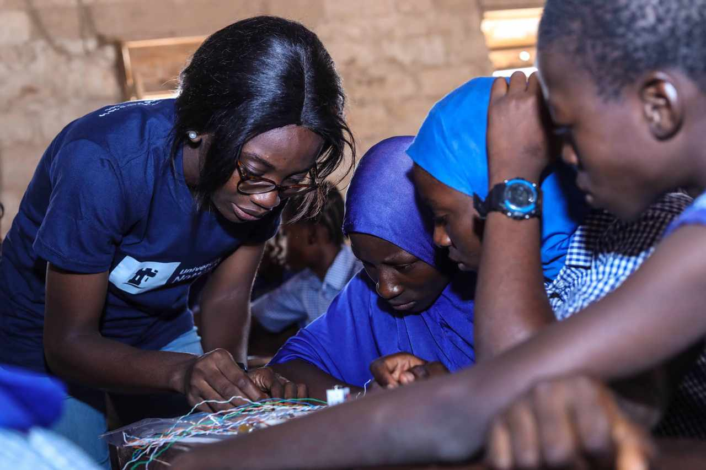

Back
Back
ALUMNI SPOTLIGHT: Temilade Adelakun
| June 24, 2020


Your background? (upbringing, occupation/schooling)
I am the second child of four girls. I recently completed my Mechanical Engineering studies at the University of Ibadan.
Tell us your Tech4Dev Story: how & when did you get involved, what project?
I saw a graphic design about the Nigerian Women Techsters Initiative on one of the many WhatsApp groups I was in. The “Embedded Systems” on the graphics caught my attention as I had an interest in learning about embedded systems and how they can be used to solve problems. I joined the NWT training in December 2017 in Oyo State.
What were the highlights of your Tech4Dev experience (your training period)?
The highlight for me was my team being able to create and deliver a solar tracker project despite our different busy schedules.
The first two weeks of the program were a bit discouraging; some participants were from non-science backgrounds and were dragging the embedded class behind making it difficult and boring. We, with science backgrounds, were already considering switching to either the web development class or games development class. However, our facilitator, Mr Ifeanyi was very patient and understanding, he broke down complex or confusing terms and within a month we were excited about embedded systems and were looking forward to tackling hands-on projects. At the end of the training, we were grouped into teams and myself and my teammates worked on a solar tracker project which required research and practical steps. At the end of the program, my teammates and I came tops as a result of the project we created. It was one of the best days of our lives.
Volunteerism is a big part of Tech4Dev’s program. What are your memories of the trainers or people who delivered the program?
The trainers were patient, understanding and they put so much effort into imparting knowledge.
What are you doing currently? A brief of your work
I recently finished school (first week of March), a few days before the COVID 19 pandemic became serious in Nigeria. I have not had my graduation ceremony due to the pandemic.
However, I have been at home taking online courses on data science and machine learning to improve my skills.
I am open to jobs or graduate internships in data science, machine learning or product management.
What are your plans for the future?
Working in one of the top technology firms as a machine learning engineer and using technology and my skills to solve problems in the world.
How did the program influence your career path and you in general?
This program taught me that dedication and patience produce great results. I could not believe I could learn all the things I learnt during the program but I did not give up.
I volunteer for organizations that support girls and women in STEM and the knowledge learnt during the program from the embedded systems class is being used to teach girls in secondary schools on embedded systems and how Arduino can be used to solve problems in the world.
What advice would you give to other young women like yourself?
STEM careers are fun, rewarding and productive. There are a lot of opportunities for women. Let’s make maximum use of them. Finally, keep pushing and don’t give up!